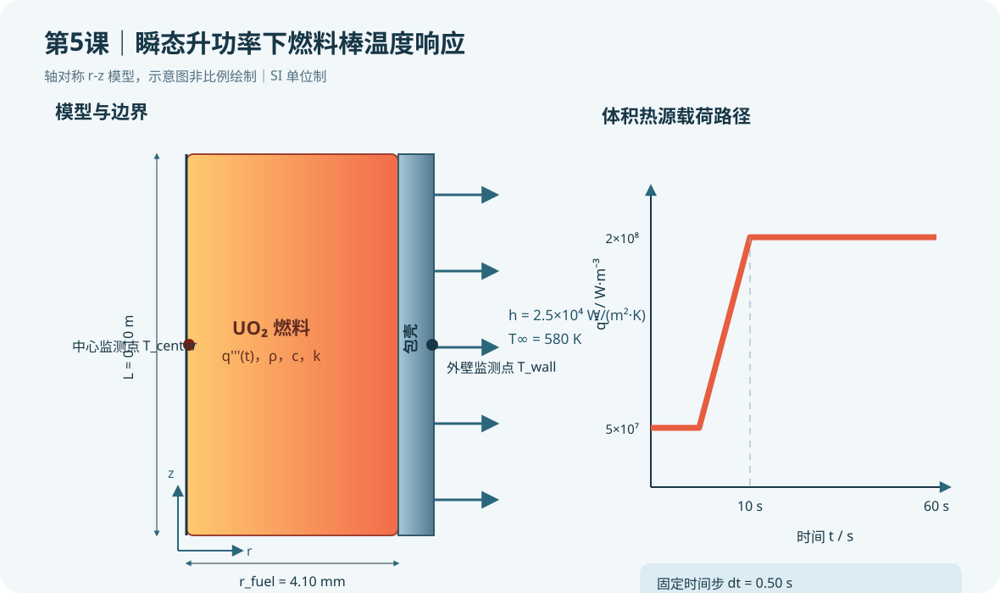

{kind=link}
验证状态：已静态检查，尚未运行 MAPDL
已完成 APDL 命令结构、SI 单位、初始稳态、固定时间步、热源更新、结果时程和行尾中文注释的静态检查；未启动 MAPDL。材料和边界数值仅用于教学。

今日目标
建立 UO₂ 燃料—包壳轴对称瞬态热模型，使体积热源在 10 s 内由低功率线性升至额定教学值，并比较燃料中心与包壳外壁的温度响应滞后。
物理问题
采用 SI 单位制（m、kg、s、K、W、Pa）。燃料半径 4.10 mm，包壳外半径 4.75 mm，轴向建模长度 0.10 m。燃料体积热源从 5.0×10⁷ W/m³ 在 10 s 内升至 2.0×10⁸ W/m³，之后保持至 60 s。包壳外壁与 580 K 冷却剂对流换热，教学换热系数为 2.5×10⁴ W/(m²·K)。
瞬态导热除了导热率，还必须输入密度和比热，因为热惯性由体积热容 ρc 决定。本例把燃料和包壳界面粘合为完全导热，暂不考虑燃料—包壳间隙；第 9–10 课将加入间隙导热与接触状态。
关键命令
ANTYPE,TRANS：指定瞬态分析。TRNOPT,FULL：采用完全法时间积分，保留热容量项。TIMINT,ON,THERM：对温度自由度启用时间积分。DELTIM,dt：指定时间步长；本例为 0.50 s。TIME,time_now：定义当前载荷步终止时间，必须单调增加。KBC,1：当前时间步内把显式载荷按阶跃保持；线性升功率由循环逐步计算qnow实现。*DO、*IF：按时间推进并在升功率/恒功率阶段切换公式。OUTRES,TEMP,ALL：保存每个子步温度，供完整时程后处理。/POST26、NSOL、PLVAR：提取并绘制指定节点温度时程。
载荷路径
| 时间 | 体积热源 | 说明 |
|---:|---:|---|
| 0 s | 5.0×10⁷ W/m³ | 先求该功率下稳态，作为瞬态初场 |
| 0–10 s | 线性增加 | 每 0.50 s 更新一次 qnow |
| 10–60 s | 2.0×10⁸ W/m³ | 保持功率并观察热惯性趋稳过程 |
完整脚本
见同目录 [example.inp](example.inp)。每条可执行命令和参数赋值均带中文行尾注释。脚本保存所有时间步温度结果，并输出燃料中心与包壳外壁时程。
预期结果
燃料中心温度应高于包壳外壁，并因燃料热容和径向导热产生响应滞后。10 s 升功率结束后，温度仍可能继续上升并逐渐趋于新稳态。若温度曲线出现无物理依据的尖峰或锯齿，应先检查时间步、载荷更新、初始稳态和材料单位。
本课只完成静态语法与物理一致性检查，没有运行 MAPDL，因此不报告虚构的最高温度数值。
验证清单
- **初场检查**：确认瞬态从
q_start的稳态结果开始，而不是从默认零温度开始。 - **单位检查**：密度用 kg/m³、比热用 J/(kg·K)、热源用 W/m³、时间用 s。
- **时间步敏感性**：分别采用 1.0、0.50 和 0.25 s，比较 10 s 时中心温度与最终温度。
- **能量检查**：对燃料发热功率、外壁对流排热与模型内能变化进行量级核对。
- **节点检查**：确认
n_center位于 r=0、z=L/2，n_wall位于 r=r_clad、z=L/2。
常见错误
- 只给导热率、未给密度和比热：稳态可能求解，但瞬态热惯性没有物理基础。
TIME没有递增或载荷循环没有覆盖全部燃料单元：会导致求解中止或局部漏载。- 用很大时间步仍声称捕捉 10 s 升功率细节：最终温度可能接近，但峰值时刻和相位滞后会失真。
练习题
- 把
dt依次改为 1.0、0.50、0.25 s，记录 10 s 和 60 s 的燃料中心温度，画出时间步收敛表。 - 将升功率时间由 10 s 改为 2 s 和 30 s，比较中心—外壁温差峰值，并讨论更快升功率为何可能增加后续热应力。
下一课将把瞬态温度场传递到结构单元，计算包壳热膨胀与应力。工程分析应使用与燃料牌号、孔隙率、燃耗、辐照状态和冷却剂工况一致的物性及边界。
完整 example.inp（逐行中文注释）
01! 第5课：瞬态升功率下燃料棒温度响应与时间步控制 02/CLEAR ! 清空数据库，避免旧模型、载荷和结果残留 03/FILNAME,lesson5_power_ramp ! 设置本课作业名，输出文件以 lesson5_power_ramp 开头 04/PREP7 ! 进入前处理器 05 06! ----- 参数：统一采用 m、kg、s、K、W、Pa ----- 07r_fuel=4.10e-3 ! UO2 燃料芯块半径，单位 m 08r_clad=4.75e-3 ! 包壳外半径，单位 m 09length=0.10 ! 轴向建模长度，单位 m 10q_start=5.0e7 ! 升功率前燃料体积热源，单位 W/m^3 11q_end=2.0e8 ! 升功率后燃料体积热源，单位 W/m^3 12ramp_time=10.0 ! 线性升功率持续时间，单位 s 13end_time=60.0 ! 瞬态总时长，单位 s 14dt=0.50 ! 基准时间步，单位 s 15tbulk=580.0 ! 冷却剂体温，单位 K 16hconv=2.5e4 ! 包壳外壁换热系数，单位 W/(m^2·K) 17esize_r=0.20e-3 ! 目标单元尺寸，单位 m 18nstep=end_time/dt ! 计算总时间步数，本例为 120 步 19 20! ----- 热单元与材料热物性 ----- 21ET,1,PLANE55 ! 定义二维热传导单元 PLANE55 22KEYOPT,1,3,1 ! 将 PLANE55 设置为轴对称，X 为半径、Y 为轴向 23MP,KXX,1,3.5 ! 材料 1 UO2 导热率，单位 W/(m·K)，仅为教学值 24MP,DENS,1,10970 ! 材料 1 UO2 密度，单位 kg/m^3 25MP,C,1,300 ! 材料 1 UO2 比热，单位 J/(kg·K) 26MP,KXX,2,16.0 ! 材料 2 包壳导热率，单位 W/(m·K)，仅为教学值 27MP,DENS,2,6500 ! 材料 2 包壳密度，单位 kg/m^3 28MP,C,2,330 ! 材料 2 包壳比热，单位 J/(kg·K) 29 30! ----- 轴对称燃料—包壳几何 ----- 31RECTNG,0,r_fuel,0,length ! 建立燃料芯块 r-z 半截面 32RECTNG,r_fuel,r_clad,0,length ! 建立包壳 r-z 半截面 33AGLUE,ALL ! 粘合材料界面，使温度与热流连续 34ASEL,S,LOC,X,0,r_fuel ! 选择燃料半径范围内的面积 35AATT,1,,1 ! 为燃料面积指定材料 1 和单元类型 1 36ASEL,S,LOC,X,r_fuel,r_clad ! 选择包壳半径范围内的面积 37AATT,2,,1 ! 为包壳面积指定材料 2 和单元类型 1 38ALLSEL,ALL ! 恢复全部几何选择 39ESIZE,esize_r ! 设置全局目标单元尺寸 40AMESH,ALL ! 对燃料和包壳面积划分网格 41 42! ----- 保存中心和外壁监测节点编号 ----- 43NSEL,S,LOC,X,0 ! 选择燃料中心线节点 44NSEL,R,LOC,Y,length/2 ! 从中心线节点中保留轴向中面附近节点 45*GET,n_center,NODE,0,NUM,MIN ! 记录燃料中心监测节点编号 46ALLSEL,ALL ! 恢复全部节点与单元 47NSEL,S,LOC,X,r_clad ! 选择包壳外表面节点 48NSEL,R,LOC,Y,length/2 ! 从外表面节点中保留轴向中面附近节点 49*GET,n_wall,NODE,0,NUM,MIN ! 记录包壳外壁监测节点编号 50ALLSEL,ALL ! 恢复全部节点与单元 51 52! ----- 对流边界与初始小功率载荷 ----- 53LSEL,S,LOC,X,r_clad ! 选择包壳外表面边界线 54SFL,ALL,CONV,hconv,tbulk ! 施加对流边界，环境温度为 tbulk 55ALLSEL,ALL ! 恢复全部实体选择 56ESEL,S,MAT,,1 ! 仅选择 UO2 燃料单元 57BFE,ALL,HGEN,,q_start ! 施加升功率前体积热源 q_start 58ALLSEL,ALL ! 恢复全部单元选择 59FINISH ! 退出前处理器 60 61! ----- 先求初始稳态，作为瞬态初始温度场 ----- 62/SOLU ! 进入求解器 63ANTYPE,STATIC ! 指定稳态热分析 64SOLVE ! 求解 q_start 下的初始稳态温度场 65FINISH ! 退出稳态求解器 66 67! ----- 重启动为完全瞬态热分析 ----- 68/SOLU ! 再次进入求解器 69ANTYPE,TRANS ! 指定瞬态热分析 70TRNOPT,FULL ! 使用完全法时间积分，保留热容量效应 71TIMINT,ON,THERM ! 对热自由度启用瞬态积分 72KBC,1 ! 每个显式给定的 qnow 在当前小时间步内按阶跃保持 73AUTOTS,OFF ! 关闭自动时间步，便于教学比较固定时间步敏感性 74DELTIM,dt ! 设置固定时间步为 dt 75OUTRES,ERASE ! 清除默认结果输出设置，减少不必要结果量 76OUTRES,TEMP,ALL ! 保存每个子步的温度结果以绘制完整时程 77 78! ----- 0–10 s 线性升功率，之后保持至 60 s ----- 79*DO,istep,1,nstep,1 ! 按固定时间步循环推进整个瞬态 80time_now=istep*dt ! 计算当前物理时间，单位 s 81*IF,time_now,LE,ramp_time,THEN ! 判断当前时间是否仍处于线性升功率阶段 82qnow=q_start+(q_end-q_start)*time_now/ramp_time ! 线性插值得到当前体积热源 83*ELSE ! 进入升功率结束后的恒功率阶段 84qnow=q_end ! 将体积热源保持在最终值 q_end 85*ENDIF ! 结束功率阶段判断 86ESEL,S,MAT,,1 ! 仅选择燃料单元以更新体积热源 87BFE,ALL,HGEN,,qnow ! 用当前 qnow 覆盖燃料体积热源 88ALLSEL,ALL ! 恢复全部单元，避免漏算包壳 89TIME,time_now ! 设置本载荷步终止时间 90SOLVE ! 求解当前时间步温度场 91*ENDDO ! 完成全部 120 个时间步 92FINISH ! 退出瞬态求解器 93 94! ----- 时程后处理：燃料中心与包壳外壁 ----- 95/POST26 ! 进入时间历程后处理器 96NUMVAR,20 ! 为时程变量预留存储空间 97NSOL,2,n_center,TEMP,,T_center ! 提取燃料中心节点温度时程 98NSOL,3,n_wall,TEMP,,T_wall ! 提取包壳外壁节点温度时程 99PLVAR,2,3 ! 绘制中心温度和外壁温度随时间变化 100FINISH ! 退出时间历程后处理器 101 102! ----- 最终时刻结果与文本输出 ----- 103/POST1 ! 进入通用后处理器 104SET,LAST ! 读取 60 s 最终结果集 105PLNSOL,TEMP ! 绘制最终节点温度云图 106*GET,tmax,NODE,0,MAX,TEMP ! 提取最终时刻全模型最高温度，单位 K 107*GET,tmin,NODE,0,MIN,TEMP ! 提取最终时刻全模型最低温度，单位 K 108*CFOPEN,lesson5_results,txt ! 打开文本结果文件 109*VWRITE,tmin,tmax,dt,ramp_time ! 写出最终温度和时间步信息；下一行保持纯格式描述符 110('Tmin [K] = ',E16.8,', Tmax [K] = ',E16.8,', dt [s] = ',E16.8,', ramp [s] = ',E16.8) 111*CFCLOS ! 关闭并刷新结果文件 112FINISH ! 结束本课脚本